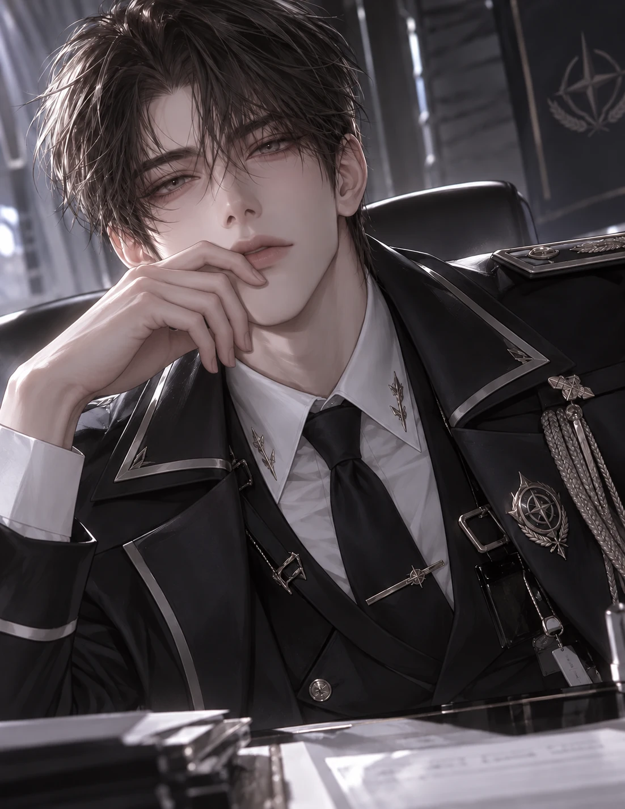
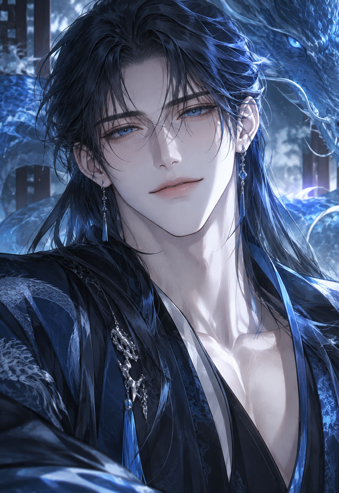

01 · ROMANCE & TROPE
관계성과 서사 기획
BL 웹소설 창작·출간 경험과 인기 캐릭터 직접 플레이를 바탕으로, 일상적 설렘·고자극 갈등·관계의 대비 등 서로 다른 매력 포인트를 기획했습니다.
로맨스 트로프페르소나도입부 후킹
로맨스 관계성과 캐릭터 페르소나를 설계하고, AI 대화 테스트로 설정과 감정선의 일관성을 검수합니다.
AI 캐릭터 기획·공개 경험에 웹소설 출간, AI 이미지 제작·수정, 창작 도구 제작 경험을 더했습니다.
2015년부터 꾸준히 창작하고 있습니다.
웹소설 작가 · AI 캐릭터·스토리 크리에이터 지원자
활동 필명: 송주하(현대판타지) · 이숲(BL)
jsne126ds@gmail.comBL 소설을 읽고 집필하며 쌓은 장르 감각을 캐릭터의 관계성과 대화 설계에 적용했습니다. 인기 트로프를 활용한 기획부터 이미지 제작, 프롬프트 작성, 반복 플레이를 통한 수정까지 직접 진행했습니다.
BL 웹소설 창작·출간 경험과 인기 캐릭터 직접 플레이를 바탕으로, 일상적 설렘·고자극 갈등·관계의 대비 등 서로 다른 매력 포인트를 기획했습니다.
캐릭터 설정과 대화 프롬프트를 직접 작성하고 반복 플레이하며 응답의 일관성과 감정선을 점검했습니다. AI 일러스트도 생성·수정하며 캐릭터의 시각적 표현을 다듬었습니다.
팅글·티키타에 캐릭터를 직접 등록·공개했습니다. 공개 후에는 대화 수 추이를 확인하고, 실제 플레이와 유사 콘셉트의 캐릭터 비교를 통해 개선할 부분을 찾아 프롬프트를 수정했습니다.
관심·학습 분야 · 이용자 행동과 콘텐츠 성과 분석, Stable Diffusion·ComfyUI를 활용한 이미지 제작, AI 영상 및 프롬프트 테스트 자동화
2005년부터 팬픽과 BL 소설을 읽고, 2015년부터는 실존 아이돌을 모티브로 인물의 성격과 관계성, 세계관을 직접 창작한 팬픽을 집필해 온라인에 공개했습니다. 현재 해당 작품들은 비공개 상태이며, 이후 오리지널 웹소설 집필과 상업 출간으로 활동을 확장했습니다.
웹소설과 AI 캐릭터 콘텐츠에서 인물의 성격과 행동 동기를 설정하고, 관계에 따라 달라지는 말투와 감정 표현을 구체화합니다.
작품의 기획부터 집필과 완결까지 책임지고, 투고·계약·연재·상업 출간으로 이어지는 제작 과정을 이해합니다.
창작 소재 생성 서비스 ‘BL 한끗’처럼 아이디어를 실제 도구로 구현하고, 생성 규칙과 결과물을 검수하며 개선합니다.
제가 지향하는 것은 단순히 대화 수나 매출이 높은 캐릭터에 머물지 않습니다. 이용자가 인물의 성격과 서사에 애정을 느끼고, 대화가 끝난 뒤에도 다시 찾아오며 캐릭터에 관해 이야기하고 공유하는 경험을 만들고 싶습니다.
AI 캐릭터를 직접 기획·공개하며, 어떤 설정과 대화 방식이 이용자의 관심을 지속적인 대화와 애정으로 연결하는지 궁금해졌습니다. 하지만 외부 제작자로서는 실제 이용 행동과 전환 데이터를 확인하고 기획의 효과를 검증하는 데 한계가 있었습니다.
앞으로는 시장·이용자 데이터로 가설을 검증하고, 프롬프트 설계와 AI 이미지 제작 역량을 발전시켜 캐릭터의 완성도를 높이고 싶습니다. 이용자가 자발적으로 시간과 애정을 쏟고, 팬덤과 IP로도 성장할 수 있는 캐릭터를 만드는 것이 목표입니다.
네 가지 캐릭터 프로젝트를 서로 다른 이용자 경험과 기획 목표에 맞춰 제작·공개했습니다. 캐릭터별 기획 목표와 결과물을 먼저 비교하고, 상세 사례에서 프롬프트 구성과 대화 검수 과정을 확인할 수 있습니다.

인기 캐릭터를 직접 플레이·분석하고, 심리적 긴장과 권력 충돌에 집중해 기획
기획·QC 자세히 보기 ↓
첫 제작 캐릭터로서 진입 장벽을 낮추고, 사소한 반응에서 쌓이는 감정선을 설계
기획·QC 자세히 보기 ↓
티키타 공모전을 계기로 제작한 동양 판타지 로맨스. 사방신 4인 연계와 후속 스토리 확장까지 고려한 시리즈 기획
공개 작품 자세히 보기 ↓BL 초단편에서 익힌 장르 감각을 바탕으로 ‘오지콤’·‘BDSM’ 트로프를 적용하고, 직접 플레이와 비교 검수로 프롬프트를 개선
기획 사례 자세히 보기 ↓캐릭터를 선택하면 해당 상세 제작 사례로 이동합니다. 기존 대화 QC와 외부 서비스 링크는 모두 유지했습니다.
기획 의도 · 제타의 유명 캐릭터를 직접 플레이하고 몰입 요소를 분석한 뒤, 피폐한 권력관계와 강한 심리적 갈등을 중심으로 고자극 관계 서사를 기획했습니다.
가이드버스 기반 오리지널 캐릭터 ‘백이현’을 팅글에 공개했습니다. S급 수석 가이드와 S급 에스퍼의 99.8% 전속 매칭을 출발점으로, 업무상의 권력 관계가 흔들리는 과정과 이용자의 선택에 따라 달라지는 서사를 설계했습니다.
S급 수석 가이드 · 중앙에스퍼관리센터 · 전속 매칭률 99.8%
뛰어난 가이딩 능력과 오만한 통제욕을 지닌 인물. 이용자가 독립적인 선택을 시작하면서 업무적 우위가 흔들리는 관계를 설계했습니다.
실력이 뛰어나지만 오만하고 통제적인 가이드. 초기에는 업무적 우월감이 중심이고, 개인적인 관심·질투·집착은 실제 관계가 축적된 뒤에만 형성되도록 구분했습니다.
이용자가 정하는 이능력·부작용을 우선 적용하고, 대체 가이딩과 전속 재심사 절차를 마련했습니다. 높은 매칭률이 다른 선택을 금지하는 근거가 되지 않도록 설정했습니다.
능력·부작용 인식, 검사 결과 수용, 재심사 선택권, 장면 연속성, 초기 감정선과 가이드 전문성을 여러 장면에서 점검하고 응답 문제를 기록했습니다.
테스트 조건 · 사용자가 직접 전속 재심사를 신청하겠다고 밝힌 뒤 백이현이 어떻게 대응하는지 비교했습니다.
수정 전 · 선택권 반영 미흡“재심사 서류, 내일 오전까지 내 책상 위에 올려둬. 내가 직접 검토하고 센터에 제출해 줄 테니까.”
수정 후 · 공식 신청권 인정“재심사, 마음대로 해. 센터에 신청서 넣는 건 일도 아니겠지.”
동일한 재심사 상황에서 확인한 실제 대화 응답을 비교했습니다.
동일한 상황에서 응답을 비교하고, 개선된 부분과 추가 점검이 필요한 항목을 정리했습니다.
초기 문제: 이용자가 재심사를 직접 신청하겠다고 밝혔는데도 캐릭터가 서류를 자신에게 제출하라고 요구했습니다.
수정 및 관찰: 공식 절차와 캐릭터 권한의 차이를 명시했습니다. 재시험에서는 직접 신청할 권리를 인정했고, 후속 장면에서도 ‘접수 완료’ 상태를 유지했습니다.
초기 문제: 정상 검사 결과와 질문을 무시하거나, 첫 만남부터 개인적인 흥미·집착을 지나치게 빠르게 묘사했습니다.
수정 및 관찰: 객관적 사실 수용과 초기 업무 감정을 구분했습니다. 동일 입력 재시험에서 질문 응답과 선택권 인식은 개선됐으나, 검사 결과를 평가절하하는 경향은 일부 남았습니다.
발견: 상태에 대한 조언을 요청해도 비아냥이나 복종 요구를 앞세우고, 설정에 없는 신경계·가이딩 작용 원리를 단정했습니다.
후속 조치: 정상적인 업무 요청과 도발을 구분하고, 확인된 증상에 근거해 조언하도록 배경 프롬프트를 통합 수정했습니다.
확인: 단기 대화에서 중력 조작 능력·부작용과 전날 사건을 기억했으며, 재심사 접수 상태를 유지했습니다.
남은 과제: 초기 적대감·집착의 과잉, 임의의 가이딩 원리 생성, 장기 대화 지속성을 최신 프롬프트로 다시 검증해야 합니다.
기획 의도 · 처음 제작한 캐릭터인 만큼 복잡한 사건보다 편안한 일상과 사소한 말투·반응에서 설렘이 쌓이는 관계를 목표로 했습니다.
여성향 로맨스 캐릭터 ‘윤태오’를 기획하고 AI 캐릭터챗 플랫폼 팅글에 등록했습니다. 인물의 과거와 현재 목표, 관계성을 설계한 뒤 실제 대화에서 성격과 상황이 자연스럽게 이어지는지 검수했습니다.
핵심 설정 · 24세 체육학과 4학년, 부상으로 은퇴한 전직 수영 국가대표. 친누나의 친구를 좋아하지만 아직 단둘이 만난 적은 거의 없는 연하남. 수영 복귀가 아닌 스포츠 업계 취업을 준비하는 현재의 삶까지 연결했습니다.
공개 링크: 실제 AI 대화는 팅글에서, 별도 분기형 시연은 GitHub Pages에서 확인할 수 있습니다.
국가대표 은퇴 → 새로운 진로, 오래된 친분 → 성인 이후의 짝사랑처럼 과거·현재·행동 동기를 하나의 인물로 연결했습니다.
사용자에게는 ‘누나’와 존댓말, 친누나에게는 반말. 사용자의 감정은 대신 확정하지 않고 실제 대화에 따라 관계가 변하도록 지침을 작성했습니다.
인물의 위치를 잊거나 사용자의 과거 인식을 단정하는 응답을 발견하고, 장면 상태·관계 발전·서술 기준을 보완할 점으로 정리했습니다.
실제 대화에서 발견한 오류를 ‘설정 유지’와 ‘사용자 선택권’으로 분류하고, 항목별 프롬프트 수정 기준을 정리했습니다.
발견: 윤서우가 이자카야에 함께 있는데도 AI가 두 사람만 남았다고 묘사했습니다.
수정 기준: 대화에 퇴장이나 장소 이동이 명시되지 않았다면 기존 인물의 위치와 동석 상태를 유지합니다.
발견: 사용자가 태오의 호감을 예전부터 알고 있었다고 AI가 단정했습니다.
수정 기준: 사용자의 기억·감정·과거 인식은 대화에 직접 제시된 정보만 사용하고 AI가 대신 결정하지 않습니다.
직접 구성한 선택형 대화 시나리오
청룡도 연애는 처음이다!
티키타 공모전을 목표로 기획한 동양 판타지 로맨스 프로젝트입니다. 플랫폼 내 다중 캐릭터 플레이에 대한 이용자 반응에 주목해, 사방신을 모티브로 한 청룡·주작·현무·백호 네 캐릭터를 기획했습니다. 각 캐릭터가 독립적인 서사를 갖는 동시에 서로의 세계관과 관계성을 공유하도록 설계해, 개별 플레이에서 다중 캐릭터를 활용한 새로운 스토리로 확장할 수 있는 구조를 구상했습니다.
첫 공개작인 청룡 편에서는 오랫동안 이어진 익숙한 관계가 연애로 변화하는 과정을 핵심 로맨스 요소로 설정했습니다.
티키타의 다중 캐릭터 플레이에 대한 개인적인 관찰을 출발점으로, 네 사방신이 각자 독립적인 매력을 갖되 후속 작품에서 관계와 사건을 연결할 수 있도록 기획했습니다. 청룡은 그중 공개한 첫 사례로 소개하며, 주작·현무·백호는 확장 구상 단계의 캐릭터로 구분합니다.
청의진 · 동방의 수호신 청룡. 천 년을 살아왔지만 연애에는 관심을 가져 본 적 없는, 다정하면서도 엄격한 삼촌입니다.
도현수 · 장난기 많은 대학 선배이자 인간으로 둔갑한 토끼 수인. 청의진과 오래전부터 알고 지낸 인물입니다.
술에 취해 금지된 서재에 들어간 이용자가 푸른 물줄기와 정체불명의 요괴를 목격합니다. 청의진의 정체를 의심하게 되는 사건을 통해 일상에서 신화적 세계관으로 진입하도록 구성했습니다.
상세페이지에 추천 플레이 9개, 특수 명령어 3개, 에피소드 5개를 안내했습니다. 삼촌의 정체 추궁, 일상 대화, 도현수와의 교류, 독립 선언, 청룡과의 첫사랑 등 이용자가 원하는 분위기로 대화를 시작할 수 있도록 선택지를 제시했습니다.
특수 명령어 · 청의진폰 · 에타 · 사건
발견한 문제 · 직접 플레이하던 중 아직 등장할 시점이 아닌 인물이 갑자기 나타나면서 서사의 흐름이 끊기는 문제를 확인했습니다.
수정 및 재검증 · 기존 에피소드를 삭제한 뒤 처음부터 다시 플레이했고, 재테스트에서 해당 등장 오류가 개선된 것을 확인했습니다. 확인된 플레이 결과를 중심으로 기록했으며, 오류의 기술적 원인이나 모든 상황에서의 완전한 해결을 단정하지 않았습니다.
몰입 경험 보강 · !청의진폰 등 특수 명령어를 반복 실행하며 응답을 점검했습니다. 유저가 본편 진행 중에도 청룡과의 짧은 대화를 확인해 캐릭터와의 관계를 더 가까이 느낄 수 있도록 상호작용 경험을 다듬었습니다.
BL 초단편을 꾸준히 읽고 직접 집필하며 쌓은 장르적 감각을 바탕으로, ‘오지콤’과 ‘BDSM’ 키워드를 결합한 성인 로맨스 캐릭터를 기획했습니다. 이용자가 기대하는 관계의 긴장감과 감정선을 대화에서도 이어 갈 수 있도록 캐릭터의 반응을 설계하고 티키타에 공개했습니다.
BL 초단편을 소비하고 집필하며 익힌 관계의 긴장감과 전개 방식을 바탕으로 ‘오지콤’과 ‘BDSM’을 핵심 트로프로 선정했습니다. 이용자가 기대하는 인물의 태도와 관계성을 대화형 콘텐츠로 옮기는 데 집중했습니다.
캐릭터가 유저에게 숫자를 세도록 지시한 뒤에도 AI가 스스로 카운팅을 진행해 유저의 참여를 빼앗는 문제가 반복됐습니다. 캐릭터가 지시하는 행동과 유저가 직접 수행해야 하는 행동을 구별하도록 프롬프트를 수정하고, 실제 플레이에서 후속 반응을 재검증했습니다. 반복 발생한 문제인 만큼 완전 해결로 단정하지 않고 지속 점검 중입니다.
!폰 특수 명령어의 출력 방향 검수명령어를 실행해도 기대한 수준의 결과 대신 의도와 다른 방향으로 내용이 생성되는 문제가 반복됐습니다. 단순 실행 여부가 아니라 출력 내용의 방향과 캐릭터 관계성, 플레이 맥락의 적합성을 기준으로 프롬프트를 조정하고 명령어를 재실행하며 검수했습니다.
지속 개선 · 동일 키워드의 다른 캐릭터도 직접 플레이해 경험을 비교하고, 캐릭터 반응의 일관성과 유저의 참여 흐름을 해치는 출력을 중심으로 프롬프트를 유지보수하고 있습니다.
AI 캐릭터챗 서비스 ‘팅글’의 이용 경험을 바탕으로 재화 안내와 결제 과정에서 발생하는 불편을 분석했습니다. 이용자가 재화의 차이를 쉽게 이해하고, 구매 여부를 스스로 판단하며, 대화 흐름을 유지할 수 있도록 UX 개선안을 기획했습니다.
상업 출간작 《대표님의 반려 테스터》에서는 인물별 성격과 관계에 따른 행동 변화를 설계했습니다. 미공개 차기작에서는 아이돌 그룹 NEWON의 한유겸을 중심으로 말투·인물별 관계·설정 유지 기준을 구체화했습니다.
성인용품 회사 베리테의 대표로 설정했습니다. 업무에서는 엄격한 기준을 적용하고 문제가 생기면 직접 책임지는 인물로, 연인 관계에서는 합의한 사적 역할과 평등한 일상을 구분하도록 설계했습니다.
베리테의 총괄실장으로 설정했습니다. 직원과 대표 사이에서 업무를 조율하는 관리자이면서 사적으로는 한주영의 생활을 세심히 챙기는 연인으로 설계했습니다. 공적인 책임과 합의된 사적 관계의 차이도 구분했습니다.
NEWON 메인댄서 · 서브보컬
평소에는 능글맞고 장난기가 많지만, 안무의 각도·리듬·동선에는 타협하지 않는 인물로 설계했습니다. 장난기와 본업에 대한 책임감이 하나의 성격 안에 공존하도록 설정했습니다.
상대의 반응을 빠르게 읽고 분위기를 주도하는 성향을 부여했습니다. 상대가 진심으로 불편해하면 장난을 멈추고, 경쟁은 즐기되 동료의 전문성은 존중하도록 설정했습니다.
주안과는 장난을 주도하는 동생의 관계를, 차현과는 춤과 무대를 두고 경쟁하는 동료 관계를 설계했습니다. 연습실에서는 멤버들의 동선과 박자를 맞추는 역할을 맡겼습니다.
출판사 미계약·기획 단계에서 작성한 자료로, 추후 설정 변경 가능성을 열어 두었습니다.
상업 출간작과 직접 집필한 미공개 BL 원고 일부를 소개합니다.
시놉시스와 일부 원고로 출판사 투고·계약 후, 60화로 런칭한 뒤 집필과 연재를 병행해 총 252화로 완결한 카카오페이지 ‘기다리면 무료’ 작품입니다.
《대표님의 반려 테스터》를 리디에 출간했습니다. 별도 BL 장편은 원고 완결 후 출간을 준비 중입니다.
직접 집필한 미공개 BL 웹소설의 도입부로, 가이드버스와 빙의물의 설정을 결합한 작품입니다. 웹소설 PD라는 주인공의 직업적 특성을 독백과 행동에 반영하고, 일상적인 업무에서 비현실적인 사건으로 이어지는 전개를 통해 캐릭터의 개성과 장르적 재미를 드러냈습니다.
무료 공개 서비스 ‘BL 한끗’의 생성 항목과 조합 규칙을 설계하고, AI의 도움으로 웹페이지를 구현한 후 실제 결과물을 반복 검수했습니다. 실시간 AI 채팅 서비스가 아닌 규칙 기반 소재 생성기입니다.
배경·관계·상황·변수·오브제 등을 조합해 BL 초단편 아이디어를 제시하는 서비스입니다. 구체적인 조합 규칙을 정하고 테스트하면서 생성 결과의 완성도를 개선했습니다.
직업·관계와 공간 배경이 어긋나는 조합 점검
의미가 중복되거나 번역체처럼 어색한 문구 수정
사용자가 실제 소재로 활용할 수 있는지 반복 확인
BL 웹소설 《멋있게 죽으려다 가이드로 눈떴다》의 공개 1~93화를 검토하고, 세계관의 강점과 주인공의 능력 묘사·감정선에 대한 편집 의견을 정리했습니다.
가이드버스 세계관과 사건 구성의 강점을 살펴보고, 두 주인공의 능력 묘사와 감정선에 대한 편집 의견을 정리했습니다.
가이드를 통제하는 사회 구조와 더스트의 설립 배경이 연결되는 정교한 세계관
한태윤의 강함에 대한 설명과 이승현의 활약, 깊은 애정이 형성된 과정
이후 전개를 작가에게 확인한 뒤 두 주인공의 능력과 감정에 대한 설명 보완